2023年北京中考数学 第22题 解析
22. 在平面直角坐标系 中，函数
中，函数
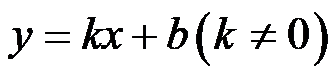
的图象经过点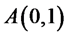
和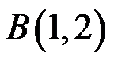
，与过点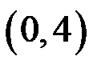
且平行于x轴的线交于点C．（1）求该函数的解析式及点C的坐标；
（2）当
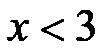
时，对于x的每一个值，函数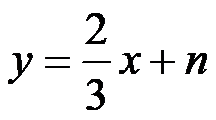
的值大于函数的值且小于4，直接写出n的值．【答案】（1）
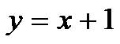
，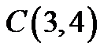
； （2）
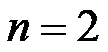
．【解析】
【分析】（1）利用待定系数法可求出函数解析式，由题意知点C的纵坐标为4，代入函数解析式求出点C的横坐标即可；
（2）根据函数图象得出当过点
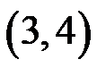
时满足题意，代入求出n的值即可．【小问1详解】
解：把点，代入得：
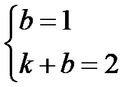
，解得：
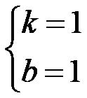
，∴该函数的解析式为，
由题意知点C的纵坐标为4，
当
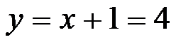
时，解得：
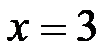
，∴；
【小问2详解】
解：由（1）知：当时，，
因为当时，函数的值大于函数的值且小于4，
所以如图所示，当过点时满足题意，
代入得：
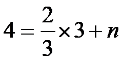
，解得：．
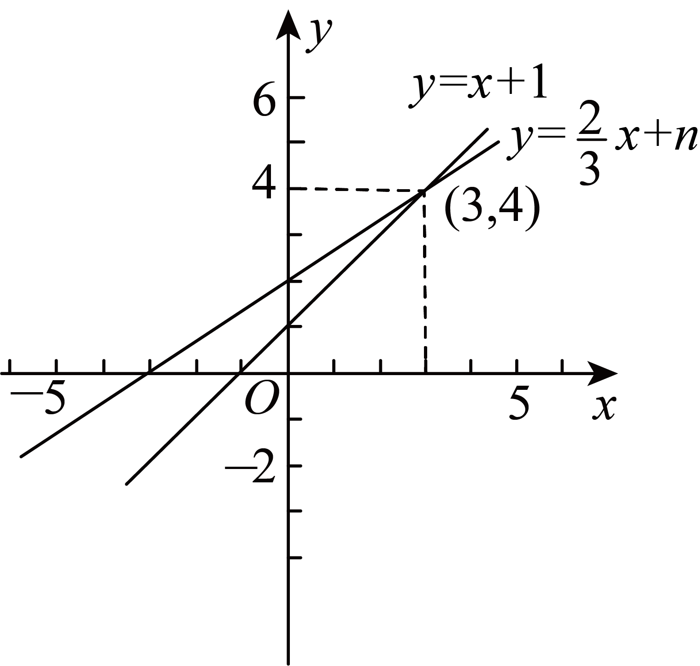
【点睛】本题考查了一次函数的图象和性质，待定系数法的应用，一次函数图象上点的坐标特征，利用数形结合的思想是解题的关键．